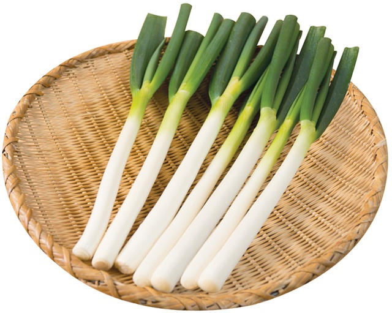
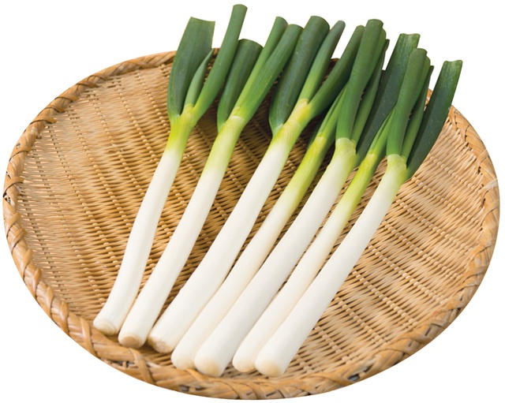

김치찌개
120,000
VND김치찌개+계란말이+김+반찬+공기밥

한국 요리 중 하나. 김치를 기반으로 하는 찌개 요리다.
된장찌개와 함께 한국인들이 가장 선호하는 한식으로, 대표적인 찌개 요리 중 하나이다.
1. 대파를 어슷썰기하고, 두부를 가로로 반으로 자르고 다시 세로로 1.5~2cm로 자른다.
2. 식용유를 냄비에 먼저 두르고 나서 돼지고기를 먼저 볶는다.
3. 맛술을 넣고 적당히 볶다가 물이 다 사라지고 붉은 기름만 남는다면 김치를 가위로 잘라 넣고 다시 오랫동안 타지 않게 불 조절을 하며 볶는다.
4. 두부와 대파를 넣고 물을 재료를 다 덮을 만큼 넣고, 고운 고춧가루 한 숟가락을 넣고 강불로 끓이다가 물이 끓으면 중약불로 낮추어 졸인다.
5. 졸인 다음 국간장과 액젓을 한 숟갈씩 넣어가며 간을 맞춘다.
 
